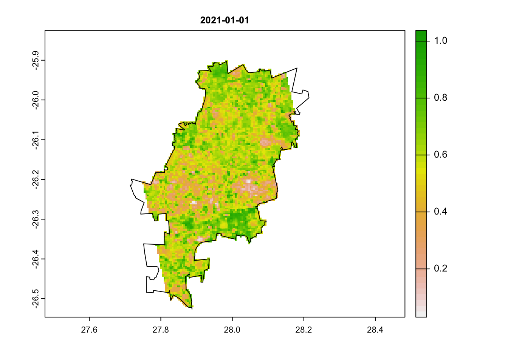
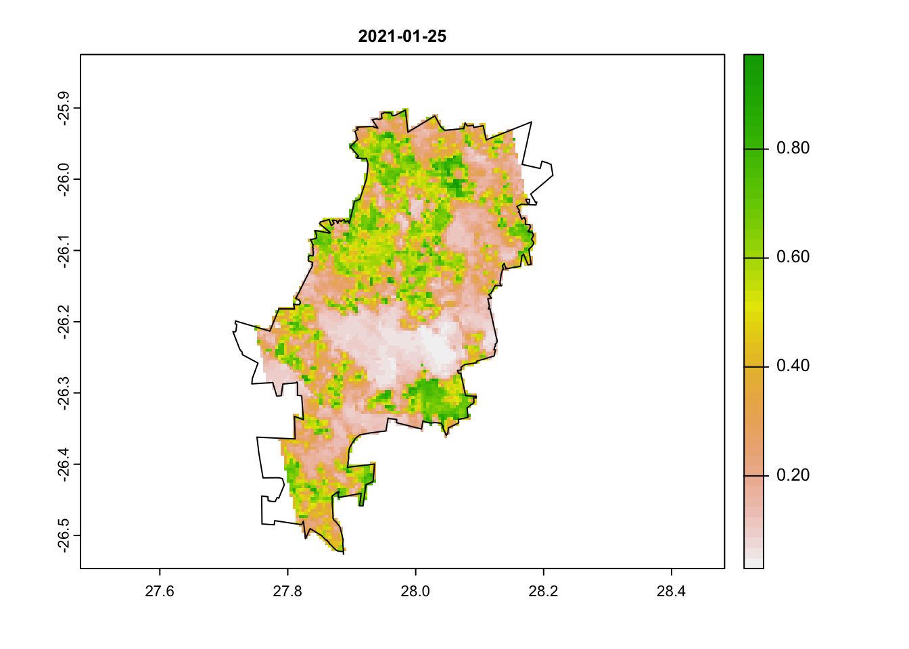
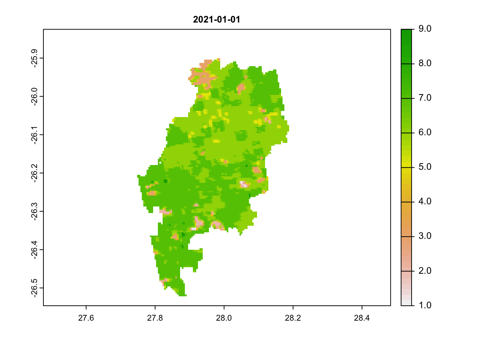
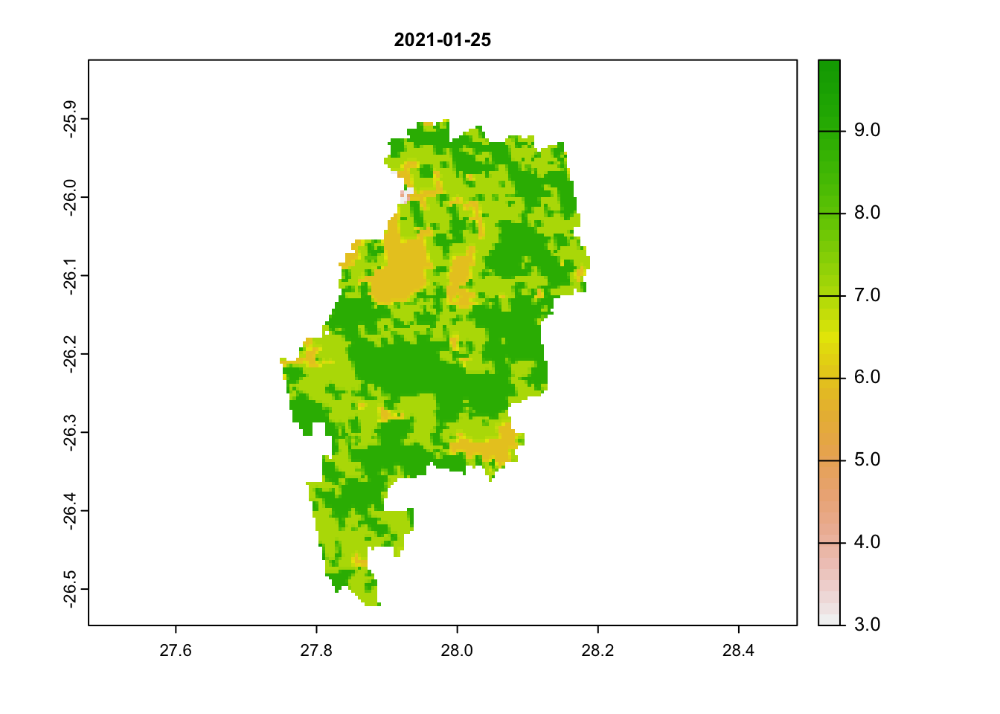
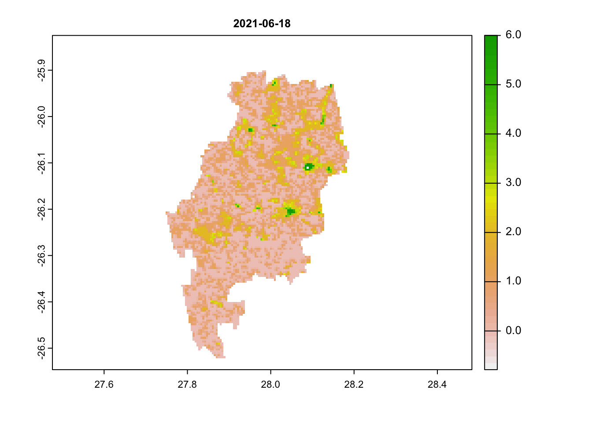
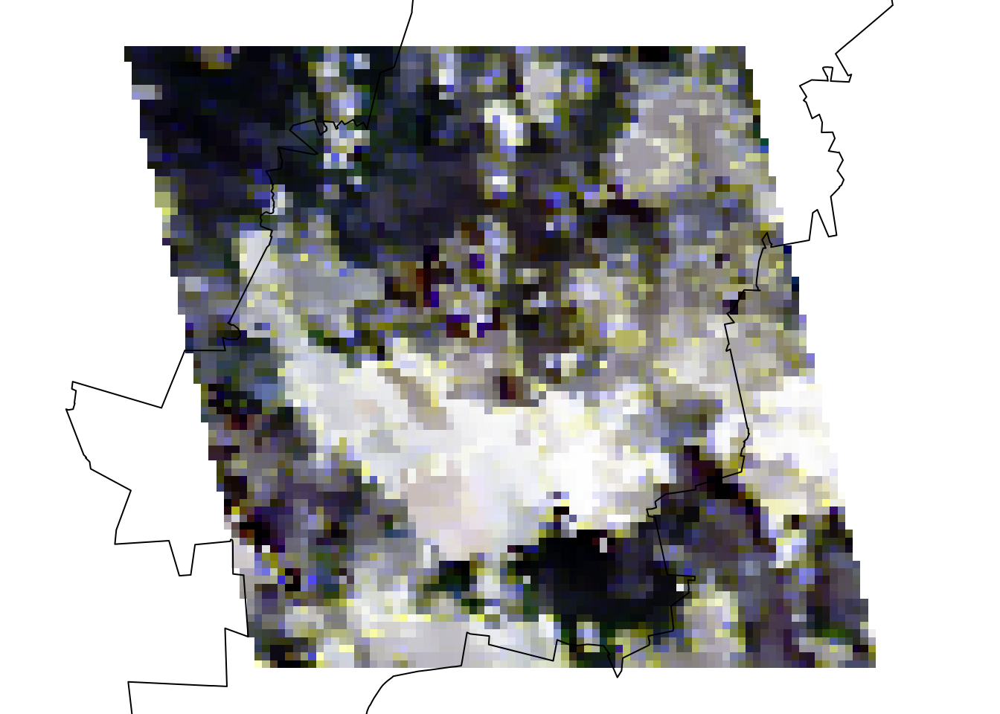

NDVI time series
Learning objectives
- Download MODIS vegetation indices
- Process raster data
- Produce a summarised time series
Introduction
In this tutorial, we will delve into satellite data to better
understand patterns of landscape change over space and time. So far, we
have explored spatial functions, but dealing with time and dates adds
another level of complexity to our analysis. To manage this, we will use
several mapping or looping functions. These
functions iterate a function over every element in our list or
collection. This is important to learn for many elements of programming
(such as in Google Earth
Engine), but becomes extremely useful in collections of satellite
data over time.

A collection of rasters over time. Source: Edzer Pebesma UseR! 2019 Spatial workshop
Satellite data can take many forms, but today we will be using passive, optical data collected from the NASA VIIRS satellite. This satellite works by capturing electromagnetic information reflected from the surface of the earth using sensors. Depending on the sensitivity of the satellite (i.e. the spectral resolution), this information may be captured along different spectral bands. Some of these we are familiar with, such as the Red, Green or Blue band. When combining these bands together, they form a ‘true’ colour image. They also collect spectral information along longer wavelengths, in the infrared range. A band of particular importance to understanding vegetation dynamics is the near-infrared band.

The electromagnetic spectrum, highlighting typical bands used in satellite remote sensing.
NDVI
There are certain properties of plants that make these bands useful to us. For example, healthy vegetation reflects more near-infrared (NIR) and green light, but absorbs more red and blue light. This is largely why healthy vegetation looks green to our eyes. Vegetation that is stressed or unhealthy will typically absorb more NIR and reflect more red light, in turn producing different colours, which our eyes may interpret as yellow or brown.

The relationship between NIR and red bands for healthy (left) and unhealthy (right) vegetation. Source: NASA
The Normalized Difference Vegetation Index uses the NIR and red bands to formulate this relationship: \[ NDVI = \frac{(NIR - red)}{(NIR + red)} \] NDVI can provide valuable information on phenology, vegetation productivity, agriculture, or disturbancs such as deforestation, illegal ploughing or wild fires.
From gisgeography: “Normalized Difference Vegetation Index (NDVI) quantifies vegetation by measuring the difference between near-infrared (which vegetation strongly reflects) and red light (which vegetation absorbs).”
NDVI can only fall between -1 and 1. A simplified understanding of NDVI values may say: values greater than 0.6 may indicate healthy vegetation, values lower than 0.6 but greater than 0, may indicate unhealthy vegetation. Values below 0 are likely to be water. Read up more on NDVI at gisgeography, where they explain the calculation and the use of different satellite bands.

NDVI change over South Africa across a single year
There are many other indices out there for vegetation, water, fire scars and many more. For most satellites, we will need to calculate these indices ourselves. Fortunately, there are also products, such as the MODIS vegetation images, which provide these indices for us. We will use these in our practical.
Tutorial
Let’s start coding. First install and load packages:
# install.packages('MODISTools')
# install.packages('tidyverse')
# install.packages('terra')
# install.packages('lubridate')
#### Load packages ----
library(MODISTools) # downloading modis data
library(tidyverse) # data manipulation and plotting
library(terra) # raster manipulation
library(lubridate) # datesExplore the data
Using the MODISTools package, we have direct access to
all of the Moderate Resolution Imaging Spectroradiometer (MODIS) and
other (e.g. VIIRS) satellite imagery. This satellite collects data on
the atmosphere, land and ocean. Read up more on the land mission here.
We will first load in our area of interest, which is the municipal boundary for the City of Johannesburg.
#### Load in our area of interest for later----
coj <- vect("data/land_cover_change/COJ_boundary.shp")Then we will identify all of the products available through
MODISTools. We will then select the VIIRS product for
vegetation indices and explore the available bands. This product gives
both Normalized Difference Vegetation Index (NDVI) and Enhanced
Vegetation Index (EVI) every 16 days across the globe at a spatial scale
of 500m. Additionally, it provides RGB bands and information on the
pixel reliability, which we will both use.
There are products that produce a finer temporal and spatial resolution, which may suit a study working within a smaller area, but we will not require this here.
#### Explore modis products ----
# All products available
products <- mt_products()
head(products)## product
## 1 Daymet
## 2 ECO4ESIPTJPL
## 3 ECO4WUE
## 4 GEDI03
## 5 GEDI04_B
## 6 MCD12Q1
## description
## 1 Daily Surface Weather Data (Daymet) on a 1-km Grid for North America, Version 4
## 2 ECOSTRESS Evaporative Stress Index PT-JPL (ESI) Daily L4 Global 70 m
## 3 ECOSTRESS Water Use Efficiency (WUE) Daily L4 Global 70 m
## 4 GEDI Gridded Land Surface Metrics (LSM) L3 1km EASE-Grid, Version 2
## 5 GEDI Gridded Aboveground Biomass Density (AGBD) L4B 1km EASE-Grid, Version 2
## 6 MODIS/Terra+Aqua Land Cover Type (LC) Yearly L3 Global 500 m SIN Grid
## frequency resolution_meters
## 1 1 day 1000
## 2 Varies 70
## 3 Varies 70
## 4 One time 1000
## 5 One time 1000
## 6 1 year 500# bands of the vegetation indices product
bands <- mt_bands(product = "VNP13A1")
head(bands)## band
## 1 500_m_16_days_blue_reflectance
## 2 500_m_16_days_composite_day_of_the_year
## 3 500_m_16_days_EVI
## 4 500_m_16_days_EVI2
## 5 500_m_16_days_green_reflectance
## 6 500_m_16_days_NDVI
## description units valid_range
## 1 Blue band (M3 478-498 nm) reflectance reflectance 0 to 10000
## 2 Day of the year Julian day of the year 1 to 366
## 3 16 day EVI average EVI ratio - No units -10000 to 10000
## 4 16 day EVI2 average EVI2 ratio - No units -10000 to 10000
## 5 Green band (M4 545-565 nm) reflectance reflectance 0 to 10000
## 6 16 day NDVI average NDVI ratio - No units -10000 to 10000
## fill_value scale_factor add_offset
## 1 -1000 0.0001 0
## 2 -1 <NA> <NA>
## 3 -15000 0.0001 0
## 4 -15000 0.0001 0
## 5 -1000 0.0001 0
## 6 -15000 0.0001 0We can then explore all of the available dates for a location of interest - in this case a central point in Johannesburg.
# dates available for a specific coordinate
dates <- mt_dates(product = "VNP13A1", lat = -26.2041, lon = 28.0473)
head(dates)## modis_date calendar_date
## 1 A2012017 2012-01-17
## 2 A2012025 2012-01-25
## 3 A2012033 2012-02-02
## 4 A2012041 2012-02-10
## 5 A2012049 2012-02-18
## 6 A2012057 2012-02-26Downloading MODIS data
We will now set up the parameters for downloading the vegetation index (VI) data. This requires the product of interest (VIIRS Vegetation Index product), latitude and longitude (Johannesburg) and a start and end date (all of 2021). We can also specify which bands we want, which will make our download faster. Here we take the NDVI band and a pixel reliability band.
We can also specify an area around the coordinate to download data
from. Here we specify 25km left and right (km_lr) and 40km
above and below (km_ab).
#### Download NDVI data for JHB ----
start_time <- Sys.time()
jhb_ndvi <- mt_subset(product = "VNP13A1",
lat = -26.183483,
lon = 27.975311,
band = c("500_m_16_days_NDVI",
"500_m_16_days_pixel_reliability"),
start = "2021-01-01",
end = "2021-12-30",
km_lr = 25,
km_ab = 40,
site_name = "JHB",
internal = TRUE,
progress = TRUE)## Downloading chunks:##
|
| | 0%
|
|============== | 20%
|
|============================ | 40%
|
|========================================== | 60%
|
|======================================================== | 80%
|
|======================================================================| 100%## Downloading chunks:##
|
| | 0%
|
|============== | 20%
|
|============================ | 40%
|
|========================================== | 60%
|
|======================================================== | 80%
|
|======================================================================| 100%end_time <- Sys.time()
# How long does it take to download 200 km2 of VIIRS NDVI data at 500 m resolution for 2 bands?
end_time - start_time## Time difference of 1.342296 minsImpressively, this only took 1.5 minutes to download 46 images overe
200 km2. An interesting feature of the MODISTools package,
is that it downloads data as a data.frame. This makes it
easy to manipulate and immediately visualise using data wrangling tools
in the tidyverse. It is still a big data frame (~1.5
million rows) - so let’s filter and summarise it down a bit.
Plot time series
Our aim is to produce a single median NDVI value for each unique date
and plot it. Importantly, we need to rescale the NDVI data using the
value in the scale column.
# Summarise
jhb_ndvi %>%
filter(band == "500_m_16_days_NDVI") %>%
group_by(calendar_date) %>%
summarise(doy = yday(as_date(calendar_date)),
ndvi_median = median(value * as.numeric(scale))) %>%
distinct(doy, .keep_all = TRUE) -> jhb_med_ndvi
head(jhb_med_ndvi)## # A tibble: 6 × 3
## # Groups: calendar_date [6]
## calendar_date doy ndvi_median
## <chr> <dbl> <dbl>
## 1 2021-01-01 1 0.620
## 2 2021-01-09 9 0.563
## 3 2021-01-17 17 0.562
## 4 2021-01-25 25 0.329
## 5 2021-02-02 33 0.634
## 6 2021-02-10 41 0.550# Plot
ggplot(jhb_med_ndvi, aes(x = doy, y = ndvi_median)) +
geom_point() +
geom_smooth(method = 'loess') +
labs(x = 'Day of Year', y = 'NDVI (median)') +
theme_classic() 
In very few lines of code - we already have a time series plot!
This clearly shows the seasonal pattern of the (southern hemisphere) summer rainfall pattern of Johannesburg. The NDVI peaks in December/January and is lowest in July/August just before the rains begin. You may notice that in February there is a very odd, outlying observation. Let’s convert the data frame to rasters to explore this a bit further.
Before we move on let’s save the plot to file:
# Save plot
ggsave('output/figs/ndvi_time_series/jhb_med_ndvi.png',
width = 120, height = 80, units = c('mm'), dpi = 'retina', bg = 'white')Convert NDVI data frame to rasters
To convert the data frame to rasters, we will first split up the large data frame into many smaller ones and store them in a list.
To do this, we first filter to only include our NDVI band and then
use the split() function by each date. The
output of this is a large list with 46 seperate data frames - one for
each date.
# filter to NDVI and then split the data frame into a list by date
jhb_ndvi_split <- jhb_ndvi %>% filter(band == "500_m_16_days_NDVI") %>% split(jhb_ndvi$calendar_date)## Warning in split.default(x = seq_len(nrow(x)), f = f, drop = drop, ...): data
## length is not a multiple of split variableWe can now convert each data frame to a raster using the built in
MODISTools function mt_to_raster(). We nest
this function inside a call to terra::rast(), which
converts the mt_to_raster() output into a
terra style SpatRast, which is easier to
manipulate.
We put this all inside the lapply() function, which will
loop this function over each element of our list. The
output is another list, but this time full of rasters.
# convert each date into a raster (and reproject)
jhb_ndvi_rast_list <- lapply(jhb_ndvi_split, function(x) {terra::rast(mt_to_raster(x, reproject = TRUE))})Using the terra::rast() function again, we can now
convert this list of rasters into a raster stack. This
stack can then be easily manipulated, like masking the
pixels to only be inside our area of interest - Johannesburg.
# convert the list of rasters into a raster stack
jhb_ndvi_rasts <- rast(jhb_ndvi_rast_list)
jhb_ndvi_rasts <- mask(jhb_ndvi_rasts, coj)Let’s now visualise our odd outlying date. We will plot both the
first image and the image on the 25th of January using the
terra::plot() function, which is an easy way to quickly
view our data.
# plot out two dates
plot(jhb_ndvi_rasts$`2021-01-01`, main = '2021-01-01')
plot(coj, add = T)
plot(jhb_ndvi_rasts$`2021-01-25`, main = '2021-01-25')
plot(coj, add = T)
We can clearly see that there is something odd in our second image. Large portions have very low NDVI values. Can you think of why this may be the case?
Let’s explore this further using the pixel reliability index.
Convert Pixel Reliability to raster
We will repeat the same steps as we did above for the NDVI band, but this time filter the data to only the pixel reliability band. We will end by plotting out 3 dates: our first image, 25th of January and then an image from June (in the dry winter months).
# filter to pixel reliability band and then split the data frame into a list by date
jhb_pr_split <- jhb_ndvi %>% filter(band == "500_m_16_days_pixel_reliability") %>% split(jhb_ndvi$calendar_date)## Warning in split.default(x = seq_len(nrow(x)), f = f, drop = drop, ...): data
## length is not a multiple of split variable# convert each date into a raster (and reproject)
jhb_pr_rast_list <- lapply(jhb_pr_split, function(x) {rast(mt_to_raster(x, reproject = TRUE))})
# convert the list of rasters into a raster stack
jhb_pr_rasts <- rast(jhb_pr_rast_list)
jhb_pr_rasts <- mask(jhb_pr_rasts, coj)
# plot out a few dates
plot(jhb_pr_rasts$`2021-01-01`, main = '2021-01-01')
plot(jhb_pr_rasts$`2021-01-25`, main = '2021-01-25')
# these are unreliable images
plot(jhb_pr_rasts$`2021-06-18`, main = '2021-06-18') # this is a reliable image
# scores below 3 are acceptableWe can immediately see that images 1 and 2 have very high scores (above 3). Any value above 3 is likely to be an unreliable pixel. Our last image most has values below 3.
An ideal workflow from here would be to filter NDVI pixel out with an unreliable pixel score. We won’t do it here, but keep this in mind if you are getting strange outliers.
Plot RGB
To better visualise this, we will now plot the true colour image using the red, green and blue bands for a limited region (20 km each direction of our point of interest) and for a single date (25th January 2021). We download and process our new data in the same way as before:
# Using the same dataset, now download the red, green and blue bands to plot a true colour image for just the 25th January 2021
jhb_rgb <- mt_subset(product = "VNP13A1",
lat = -26.183483,
lon = 27.975311,
band = c("500_m_16_days_red_reflectance",
"500_m_16_days_green_reflectance",
'500_m_16_days_blue_reflectance'),
start = "2021-01-25",
end = "2021-01-25",
km_lr = 20,
km_ab = 20,
site_name = "JHB",
internal = TRUE,
progress = TRUE)## Downloading chunks:##
|
| | 0%
|
|======================================================================| 100%## Downloading chunks:##
|
| | 0%
|
|======================================================================| 100%## Downloading chunks:##
|
| | 0%
|
|======================================================================| 100%# Split the data frame again, this time by band instead of calendar_date
jhb_rgb_split <- split(jhb_rgb, jhb_rgb$band)
# convert to raster and reproject
jhb_rgb_rasts <- lapply(jhb_rgb_split, function(x) {rast(mt_to_raster(x, reproject = TRUE))})
# combine the rasters together
jhb_rgb_rast <- c(jhb_rgb_rasts[[1]], jhb_rgb_rasts[[2]], jhb_rgb_rasts[[3]])
# We can now use the plotRGB function to plot a true colour image
plotRGB(jhb_rgb_rast, stretch = 'hist')
plot(coj, add = TRUE)
You may have guessed it by now and it is obvious to see that there is a massive cloud in the middle of our image! Clouds are a serious issue in optical remote sensing and can easily throw off NDVI measures. The MODIS and VIIRS products try to account for this by averaging data over a 16-day time period. But even then in areas with lots of cloud cover, like Johannesburg in its rainy summer and frequently in the tropics, this is a recurring issue. So keep this in mind when handling optical satellite imagery and remember to filter these out if the issues are severe using either pixel reliability measures or cloud-masking methods.
Download NDVI for multiple sites
We will now move onto download NDVI data for multiple sites. To do
this, we need to create or import a data frame with lat/lon coordinates
for each site. You can import this as a csv file. The function we will
use is MODISTools::mt_batch_subset(). This requires your
data frame to have a lat, lon and
site_name column. Rename your variables using
names(df) <- c('site_name', 'lat', 'lon') if they have
different names. We will quickly create a data frame in R, using lat/lon
coordinates for 3 cities: Johannesburg, Accra and Nairobi.
We the use the mt_batch_subset() function and use a
buffer of only 2km each direction for each city and extract only the
NDVI values for 2021.
# Batch download
# Create a dataframe of sites and lat/lon or load in a csv
lat <- c(-26.2041, 5.6037, -1.2921)
lon <- c(28.0473, -0.1870, 36.8219)
site_name <- c('JHB', 'ACC', 'NAI')
coords <- data.frame(site_name, lat, lon)
coords## site_name lat lon
## 1 JHB -26.2041 28.0473
## 2 ACC 5.6037 -0.1870
## 3 NAI -1.2921 36.8219# Use the mt_batch_subset function to load in data for multiple points
cities_ndvi <- mt_batch_subset(df = coords,
product = "VNP13A1",
band = c("500_m_16_days_NDVI"),
start = "2021-01-01",
end = "2021-12-30",
km_lr = 2,
km_ab = 2,
internal = TRUE)For the amount of data we are downloading this works amazingly quickly!
We can then summarise the data by city (site) and the date
(calendar_date) and pipe %>% this directly into a
ggplot(). Note that we use
facet_grid(cols = vars(site)) in the ggplot()
to create a separate plot for each city.
# Summarise the values by site and date and pipe this directly into a ggplot call
# Use facets to display a smoothed NDVI curve for each site
cities_ndvi %>%
group_by(site, calendar_date) %>%
summarise(doy = yday(as_date(calendar_date)),
ndvi_median = median(value * as.numeric(scale))) %>%
distinct(doy, .keep_all = TRUE) %>%
ggplot(aes(x = doy, y = ndvi_median)) +
geom_point(size = 0.8, alpha = 0.8) +
geom_smooth(method = 'loess', col = 'darkgreen') +
labs(x = 'Day of Year', y = 'NDVI (median)') +
theme_classic() +
facet_grid(cols = vars(site))
And remember to save the plot:
# Save plot
ggsave('output/figs/ndvi_time_series/cities_med_ndvi.png',
width = 180, height = 80, units = c('mm'), dpi = 'retina', bg = 'white')## `geom_smooth()` using formula 'y ~ x'That is essentially the end of the learning objectives for this tutorial. However, it is great to use time series data in presentations and to best illustrate this, it can be useful to animate our plots. Scroll down to the bonus section to see how this can be done:
Animate time series
# Animate ----
# Bonus - animate your NDVI rasters
# requires additional packages
# install.packages(c('gganimate','magick'))
library(gganimate)
library(magick)
library(sf)
# Just for speed we'll aggregate the raster data
ndvi_rast_agg <- aggregate(jhb_ndvi_rasts, 5)
# Convert it to a data frame and pivot to a long df
rast_df <- as.data.frame(ndvi_rast_agg, xy = T) %>% pivot_longer(cols = 3:48, names_to = 'Date', values_to = 'NDVI')
#### Map animation
anim_map <- ggplot(rast_df) +
geom_tile(aes(x = x, y = y, fill = NDVI, col = NDVI)) +
scale_fill_gradientn(colours = rev(terrain.colors(7)),limits = c(0,1), breaks = seq(0,1,0.25)) +
scale_colour_gradientn(colours = rev(terrain.colors(7)),limits = c(0,1), breaks = seq(0,1,0.25)) +
geom_sf(data = st_as_sf(coj), fill = NA) +
theme_void() +
labs(title = "{frame_time}") +
gganimate::transition_time(as_date(Date))
# Render the plot
anim_map_param <- gganimate::animate(anim_map, fps = 10,
width = 720,
height = 480,
res = 150,
renderer = gifski_renderer("output/figs/ndvi_time_series/gifs/animation1.gif"))
# Time series animation
anim_ts <- ggplot(jhb_med_ndvi, aes(x = as_date(calendar_date), y = ndvi_median)) +
geom_point(aes(group = seq_along(doy), col = ndvi_median)) +
geom_line(aes(col = ndvi_median), lwd = 1) +
scale_colour_gradientn(colours = rev(terrain.colors(7)),limits = c(0,1), breaks = seq(0,1,0.25)) +
scale_x_date(breaks = scales::date_breaks('months'),labels = scales::date_format('%b')) +
scale_y_continuous(limits = c(0,1), breaks = seq(0,1,0.25)) +
labs(x = 'Date', y = 'NDVI (median)',
title = 'City of Johannesburg NDVI over 2021',
subtitle = 'VIIRS/S-NPP Vegetation Indices 16-Day 500m') +
theme_classic() +
theme(legend.position = 'none') +
gganimate::transition_reveal(doy)
# Render the plot
anim_ts_param <- gganimate::animate(anim_ts, fps = 10,
width = 720, height = 480,
res = 150,
renderer = gifski_renderer("output/figs/ndvi_time_series/gifs/animation2.gif"))
# Read them back in using magick::imageread
map_mgif <- image_read(path = anim_map_param)
ts_mgif <- image_read(path = anim_ts_param)
# Combine the first frame of each gif
combined_gifs <- image_append(c(map_mgif[1], ts_mgif[1]))
# Loop in each additional frame and combine
for(i in 2:100){
combined <- image_append(c(map_mgif[i], ts_mgif[i]))
combined_gifs <- c(combined_gifs, combined)
}
combined_gifs
# Save combined gifs
image_write_gif(
image = combined_gifs,
path = "output/figs/ndvi_time_series/gifs/combined_gifs.gif"
)## [1] "/Users/Joseph/Dropbox/2022_Research/SAEON_GSN_R/Intro_to_Spatial/Intro_to_Spatial/output/figs/ndvi_time_series/gifs/combined_gifs.gif"Extra resources for using NDVI in R
The terra
chapter in the rspatial book has
lots of excellent tutorials on the theory and application of the
terra package in R. Find more information on
MODISTools here
and here.
For access to a much broader collection of remote sensing data you
may consider going through the rgee package,
which links together R and Google Earth Engine.